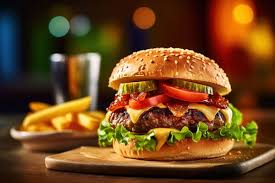

Hamburger

Description
Hamburger is an easy meal to prepare. Most important part of an hamburger is the patties. one must also be sure to get fresh
vegetables. Let's make a wonderfull hamburger together.
Ingrediens
- Minced meat
- Burger buns
- Onion
- Egg
- Seasonings
Steps
- We take the minced meet 1 egg half finely chopped onions with some salt and pepper in to a bowl add one or two spoon flour and mix them
- Firm the mixed meat into he patties
- Grill them on the grillpann
- Put some seasonings and sauce on the one side of the burger buns
- Put the grilled patty on and put the second bun on.